if you want to learn more about stars, we
have it covered. from the eerie origin of these
glorious stellar bodies to their demise and beyond. in this website you will find everything you have to
know
about stars
A star is a kind of cosmic kitchen inside which atoms of hydrogen are cooked into heavier atoms.
Stars condense from interstellar gas and dust, which are composed mostly of hydrogen.
The hydrogen was made in the Big Bang, the explosion that began the Cosmos.
If you wish to make an apple pie from scratch, you must first invent the universe.
Scroll down to see a collection of the most famous stars out there.
the sun
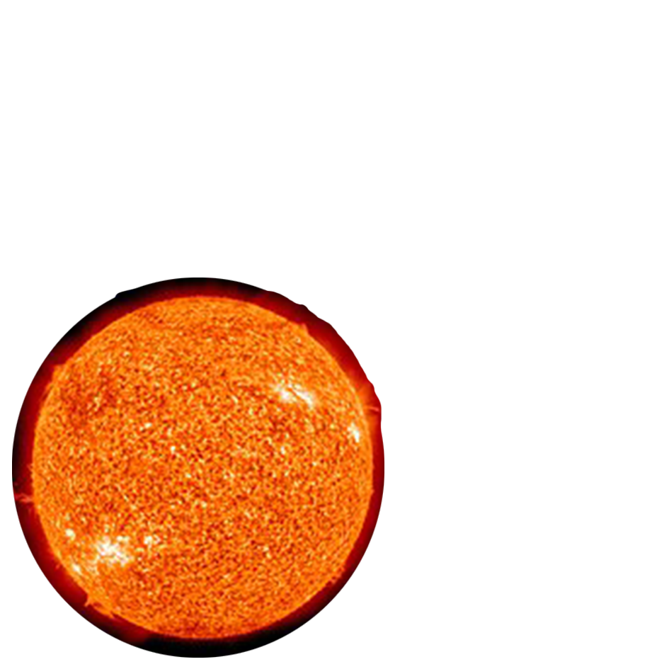
a yellow dwarf star, a hot ball of glowing gases. Its gravity holds the
solar system together, keeping
everything from the biggest planets to the smallest particles of debris in its orbit.
Proxima Centauri
Among the known stars, Proxima Centauri has been the closest star to the Sun. This object was discovered in
1915 by Robert Innes and is the nearest-known star to the Sun
Barnard's star
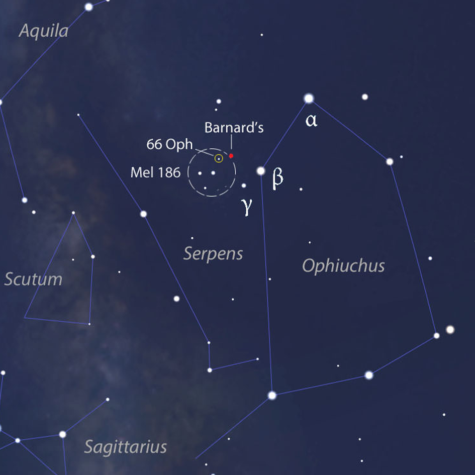
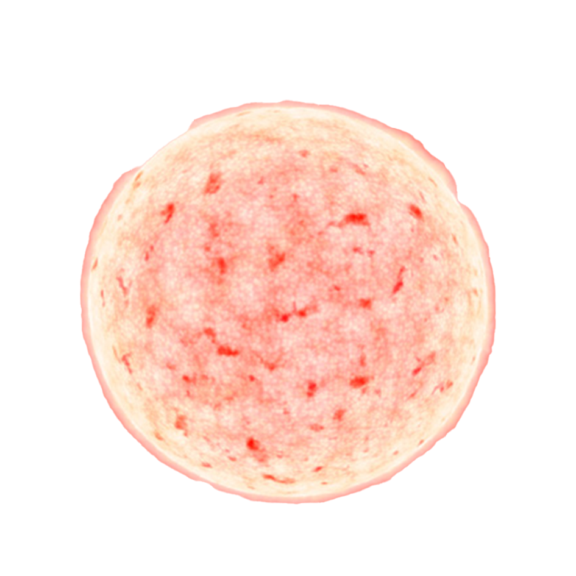
Barnard's star has the largest proper motion of any known star. It is a red
dwarf star and is too dim to be seen with the naked eye despite its
close distance.
Betelgeuse
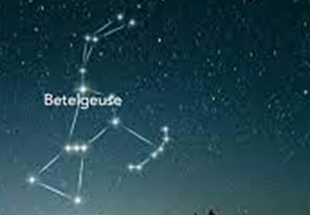
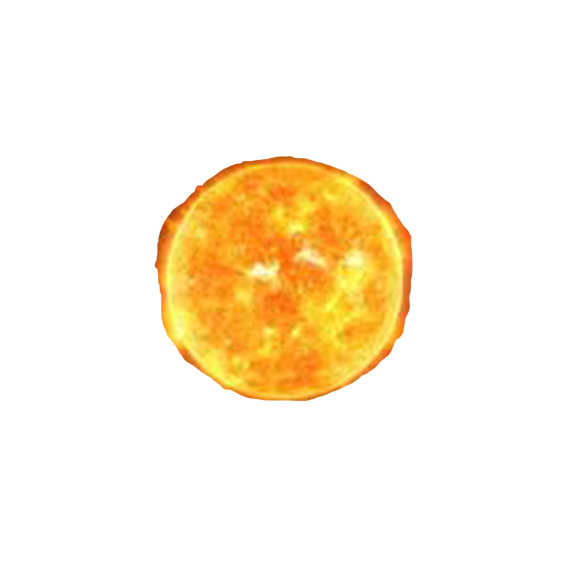
Betelgeuse is the brightest star in Orion and marks the western shoulder of the constellation.
it is one of the largest known stars and is probably at least the size of the orbits of Mars or
Jupiter around the sun.
Sirius
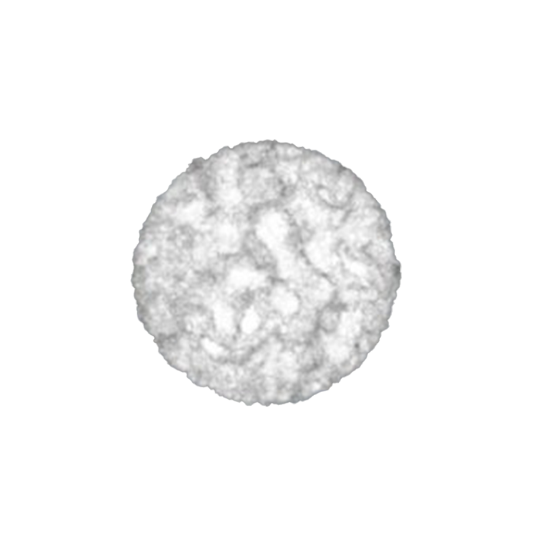
Sirius, also called the Dog Star, brightest star in the night sky. It is a binary star in the
constellation Canis Major. The bright component of the
binary is a blue-white star 25.4 times as luminous as the Sun.
Rigel
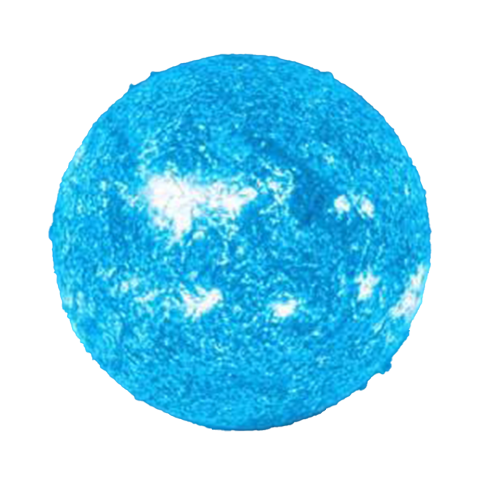
Rigel is a massive blue supergiant with a luminosity of around 61.500 up to 363.000 that of the Sun.
Its radius is around 70 times that of the Sun,
with surface temperatures of 12.100 K
THE LIFE OF A STAR
Just like living things and humans, stars have a life cycle, which consists of birth, growth,
development, middle age, old age, and death. The life cycle of a star spans over billions
of years.
All stars start as a nebula. A nebula is a large cloud of gas and dust. Gravity can pull
some of the gas and dust in a nebula together. The contracting cloud is then called a
protostar. A protostar is the earliest stage of a star’s life. A star is born when the gas
and dust from a nebula become so hot that nuclear fusion starts. Once a star has
“turned on” it is known as a main sequence star. When a main sequence star begins to
run out of hydrogen fuel, the star becomes a red giant or a red super giant.
THE DEATH OF A LOW OR MEDIUM MASS STAR
After a low or medium mass or star has become a red giant the outer parts grow bigger
and drift into space, forming a cloud of gas called a planetary nebula. The blue-white
hot core of the star that is left behind cools and becomes a white dwarf. The white dwarf
eventually runs out of fuel and dies as a black dwarf.
THE DEATH OF A HIGH MASS STAR
A dying red super giant star can suddenly explode. The explosion is called a supernova.
After the star explodes, some of the materials from the star are left behind. This material
may form a neutron star. Neutron stars are the remains of high-mass stars. The most
massive stars become black holes(more on that later) when they die. After a large mass star explodes, a
large amount of mass may remain. The gravity of the mass is so strong that gas is pulled
inward, pulling more gas into a smaller and smaller space. Eventually, the gravity
becomes so strong that nothing can escape, not even light.
Section One - Sequencing
The stages below are not in the right order. Number the stages in the correct order.
The star begins to run out of fuel and expands into a red giant or red super
giant.
Stars start out as diffused clouds of gas and dust drifting through space. A single
one of these clouds is called a nebula
What happens next depends on the mass of the star.
Heat and pressure build in the core of the protostar until nuclear fusion takes place.
The force of gravity pulls a nebula together forming clumps called protostars.
Hydrogen atoms are fused together generating an enormous amount of energy
igniting the star causing it to shine.
Section Two - Vocabulary
Match the word on the left with the definition on the right.
black dwarf a. exerts such a strong gravitational pull that no light escapes
white dwarf b. a large cloud of gas or dust in space
nebula c. what a medium-mass star becomes at the end of its life
protostar d. the earliest stage of a star ’s life
supernova e. star left at the core of a planetary nebula


 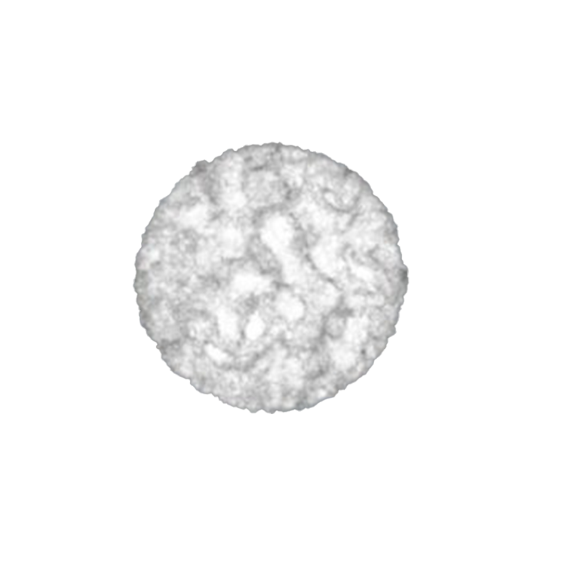
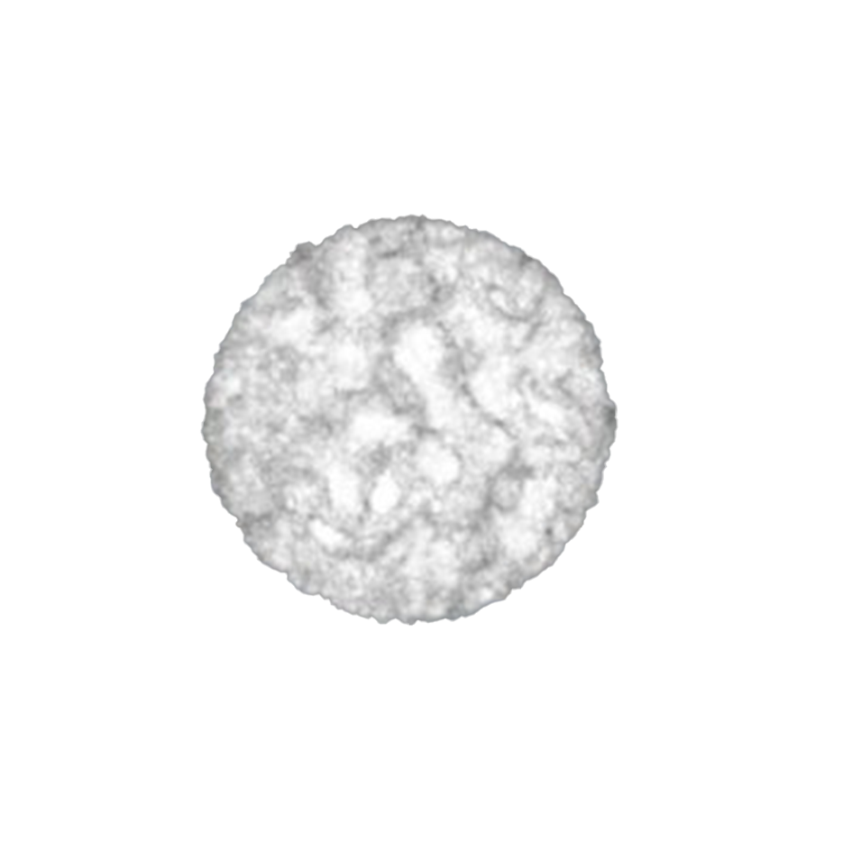
 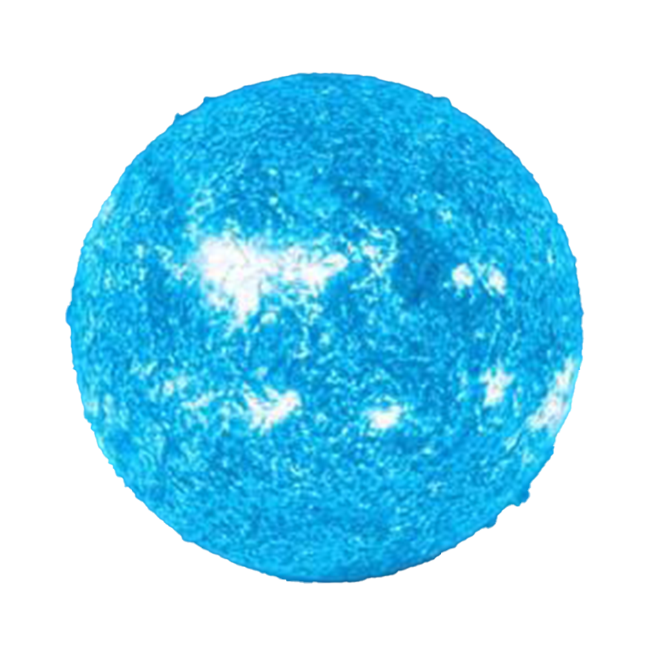
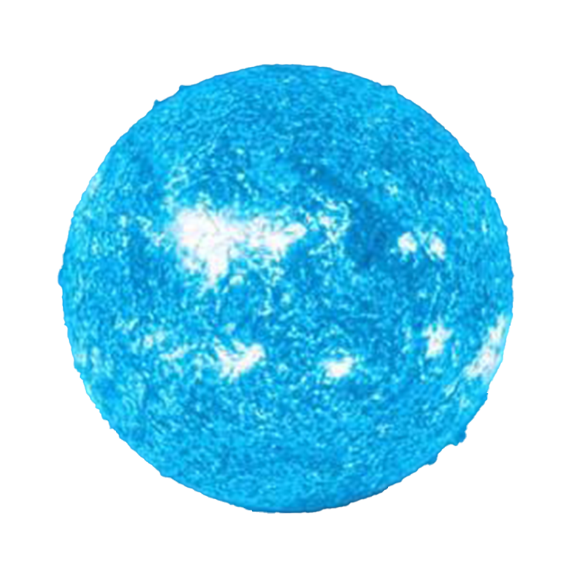